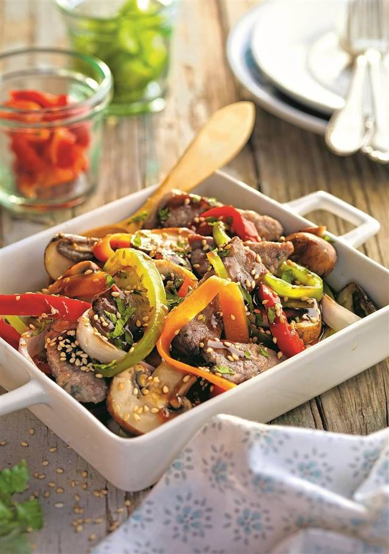
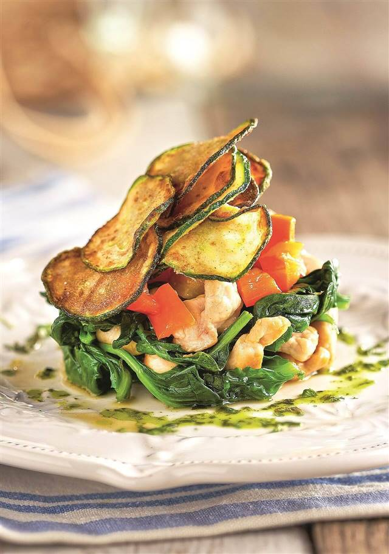
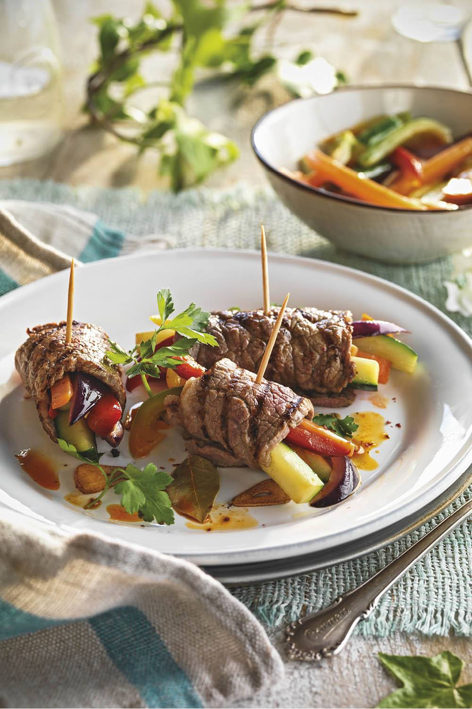

Healthy Recipe
Welcome to the Healthy Kitchen Recipes section! Here, we offer you a variety of healthy and delicious recipes that will help you maintain a healthy lifestyle. Whether you're looking for a quick and easy meal for a busy day or a sophisticated dish for a special occasion, we have the perfect recipe for you. Each recipe includes a detailed list of ingredients and step-by-step instructions to make sure every dish is a success.
MACARONI AND SHRIMP
4 persons | 30 minutes

INGREDIENTS
- 300 g macaroni; 1 leek, chopped
- 1 zucchini cut into cubes
- 400 g cooked and peeled prawns
- 300 ml oatmeal cream for cooking
- 1 teaspoon dried oregano
- 100 g grated Emmental cheese
- Oregano; Pink pepper; Olive oil; Salt
HOW TO MAKE MACARONI AND SHRIMP
1- Preheat the oven to 200 ºC. Sauté the leek for 3 minutes. Add the zucchini, season and sauté for 5 minutes. Add the shrimp and sauté for one minute.
2- Add the oatmeal cream and the dried oregano and mix. Continue cooking for two minutes and remove.
3- Bring plenty of salted water to a boil in a saucepan. Add the macaroni and cook for the time indicated on the package.
4- Mix the macaroni with the sauce and arrange in a baking dish. Cover with the cheese and gratinate in the oven.
5- Sprinkle with lightly crushed pink pepper and fresh oregano, washed and chopped, and serve.
Suggestion
- Try different types of cheese for the topping. A blue cheese or goat cheese can add an interesting flavor to your dish.
ORIENTAL BEEF STIR-FRY WITH VEGETABLES
4 persons | 20 minutes
INGREDIENTS
400 g of thin veal fillets
100 g mushrooms in slices
2 green peppers in strips; 2 carrots in julienne strips
1 red bell pepper in strips; 1 onion in julienne strips
2 tablespoons soy sauce
1 tablespoon sesame seeds
Cilantro; Flour; Olive oil; Pepper; Salt; Salt
HOW TO MAKE ORIENTAL VEAL STIR-FRY WITH VEGETABLES
1- Cut the steaks into strips, season them with salt and pepper and lightly flour them.
2- Heat a wok and when it starts to smoke add a trickle of oil. Add the vegetables, in batches, and sauté for 1 minute.
3- Add another drizzle of oil and sauté the veal for a couple of minutes, until browned.
4- Stir in the vegetables again and add the soy sauce. Sauté everything together for a few minutes, sprinkle with the sesame seeds and the washed and chopped coriander, and serve.
Suggestion
- Consider marinating the beef in soy sauce, minced garlic and grated ginger before cooking. This can help infuse more flavor into the meat.
TURKEY AND SPINACH TIMBALE
4 persons | 40 minutes
INGREDIENTS
300 g turkey breast in cubes
500 g fresh spinach
1 onion
1 red bell pepper, diced
1 zucchini in thin slices
Olive oil, Salt
HOW TO MAKE TURKEY AND SPINACH TIMBALE
1- Preheat the oven to 100 ºC. Place the zucchini slices on a baking sheet with greaseproof paper, season and drizzle with a little olive oil.
2- Bake them for 15 minutes, turn them over, and bake for 15 minutes more bake for 15 minutes more to get them golden brown and crispy.
3- Blanch the spinach in boiling salted water for 2 minutes and drain well. Peel and chop the onion and sauté it and the bell bell pepper in 2 tablespoons of olive oil for 5 minutes.
4- Add the meat and cook for 4 minutes. Add the spinach, cook for 1 more minute and season.
5- Assemble a timbale on the plate with the vegetables and the chicken breast, and decorate it with some zucchini chips.
Suggestion
- A little grated cheese on top just before serving can add a delicious touch. A cheese such as Parmesan or Manchego would work well.
VEAL ROLLS WITH VEGETABLES
4 persons | 45 minutes
INGREDIENTS
600 g of veal back fillets
1 red onion; 1 zucchini
4 garlic cloves
1/2 green bell pepper; 1/2 red bell pepper
Olive oil; Parsley
Salt; Pepper
HOW TO MAKE VEAL ROLLS WITH VEGETABLES
1- Preheat the oven to 180 ºC. Cut the steaks in half lengthwise, season them with salt and pepper and brown them for 2 minutes on each side in a frying pan with a tablespoon of olive oil.
2- Peel the onion and garlic, wash the peppers and zucchini, and cut all the vegetables into thin strips. Sauté the onion in a pan with a little olive oil and when it has colored, add the garlic.
3- Add the bell pepper and cook for a couple of minutes more. Add the zucchini and continue cooking for 1 more minute.
4- Spread the vegetables over the fillets, roll them up and close them with a toothpick. Place on the baking sheet and bake for 8 minutes. Serve the rolls sprinkled with fresh chopped parsley.
Suggestion
- Consider marinating beef steaks in a mixture of soy sauce, minced garlic and grated ginger before cooking. This can help infuse more flavor into the meat.
TORTILLA ROLLS
4 persons | 30 minutes
INGREDIENTS
4 eggs
150 gr goat cheese in slices
100 gr of arugula
Olive oil
Pepper
Sweet paprika, Salt
HOW TO MAKE TORTILLA ROLLS
1- Dress the arugula with a little salt and a drizzle of olive oil, mixing well in a bowl.
2- Beat the eggs one by one separately, seasoned with a pinch of sweet paprika and a little salt. Add to a small non-stick frying pan with a teaspoon of very hot olive oil. Cook the tortilla well on both sides as if it were a crepe.
3- Spread the omelet on a plate, top with a layer of arugula and a few slices of goat cheese. Repeat the process for each of the tortillas.
4- When you have the tortillas with the filling, roll them up forming a roll. Serve the tortillas cut in thick slices.
Suggestion
- You can add other vegetables to your tortilla rolls. Sun-dried tomatoes, spinach or chopped olives could complement the flavor of the goat cheese and arugula well.